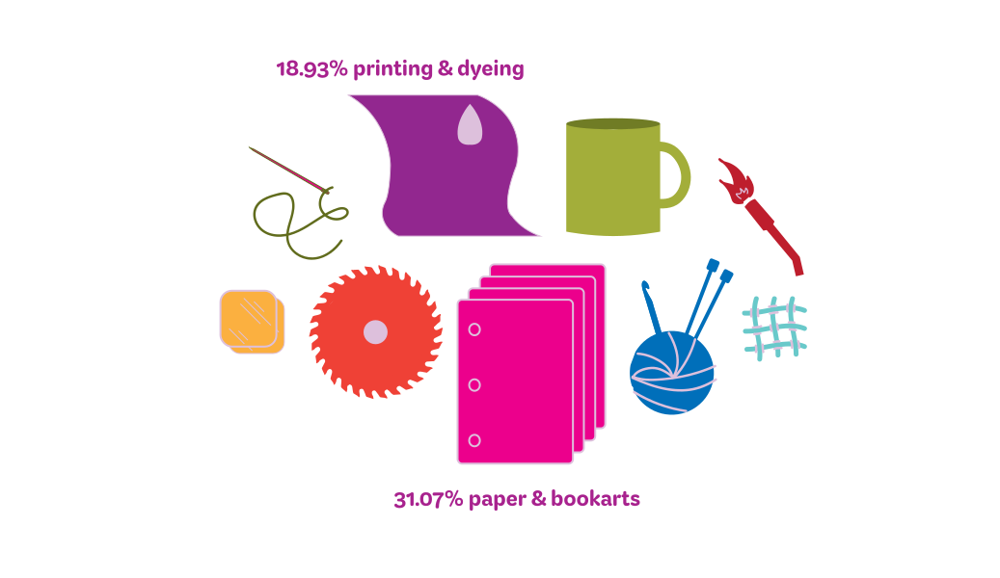
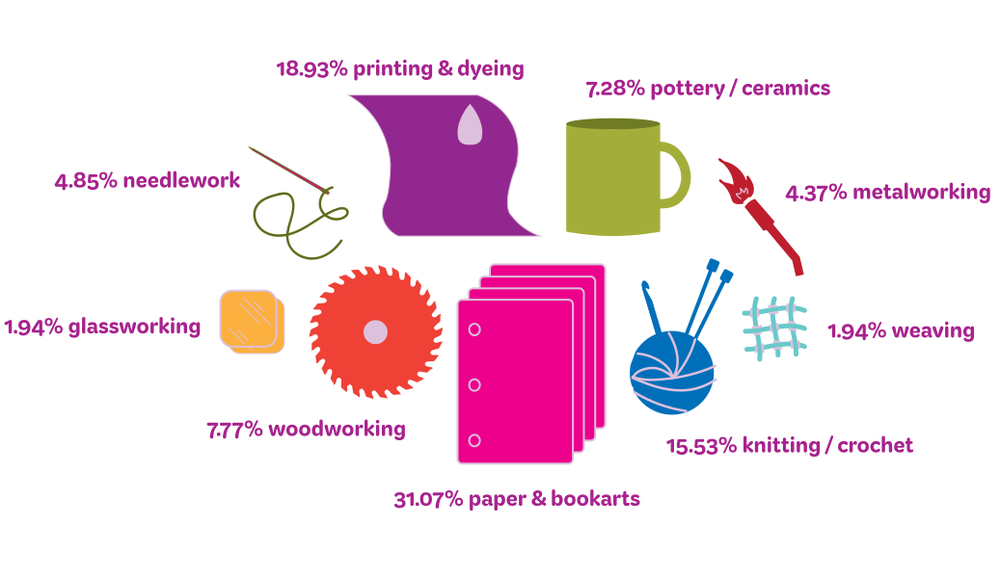
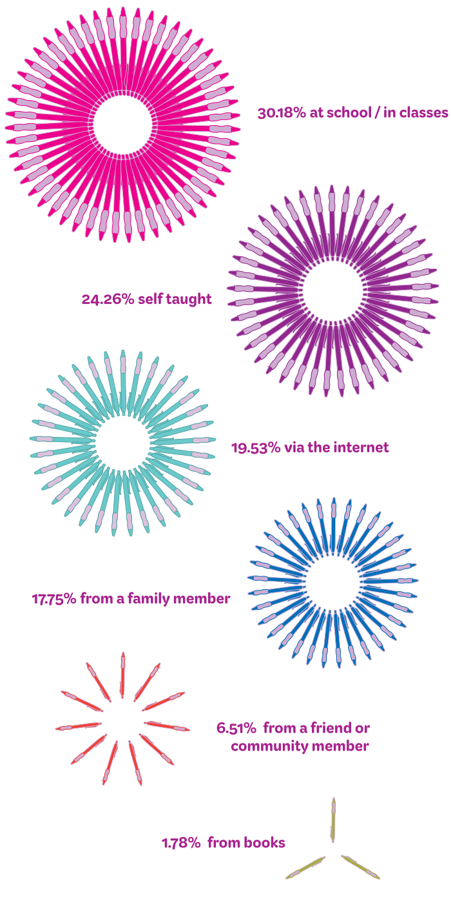

CRAFTING STATISTICS
Results from a sewing traditions survey conducted in the VCUarts community
most practiced crafts excluding sewing..


It’s important to note that because most survey respondants are in the graphic design program the results have been skewed for this particular question towards paper and bookarts.
participants initially learned their crafts..
